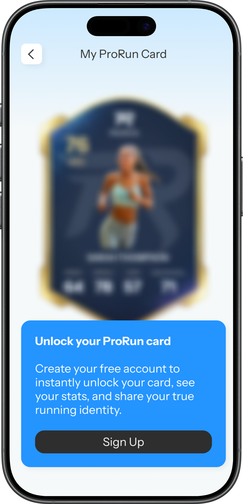
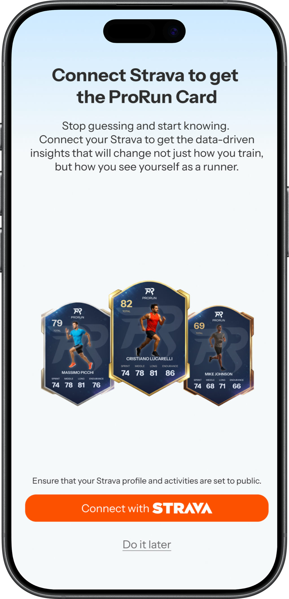
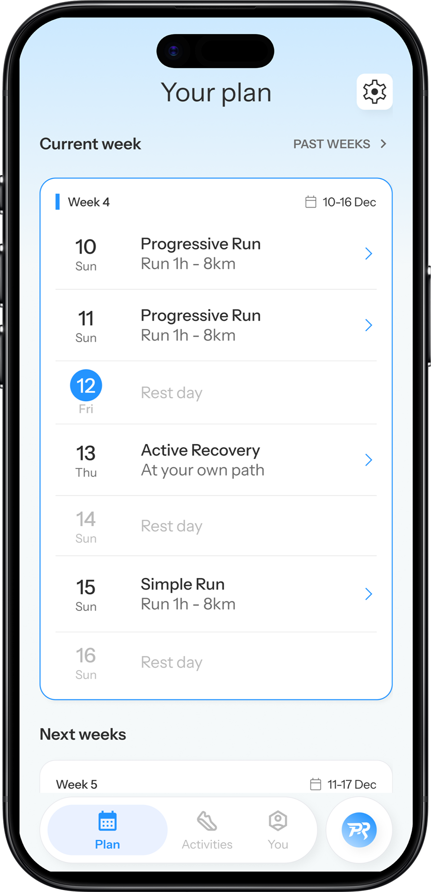
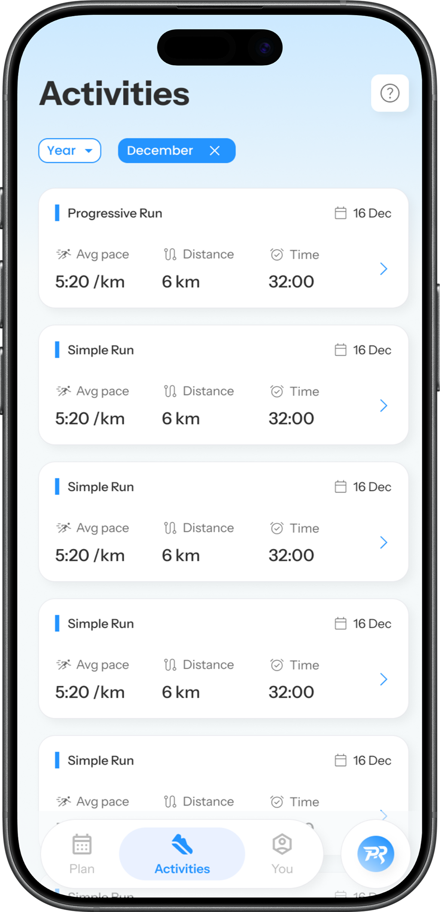
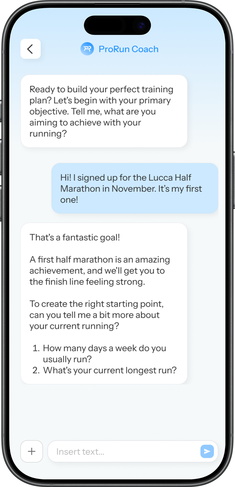
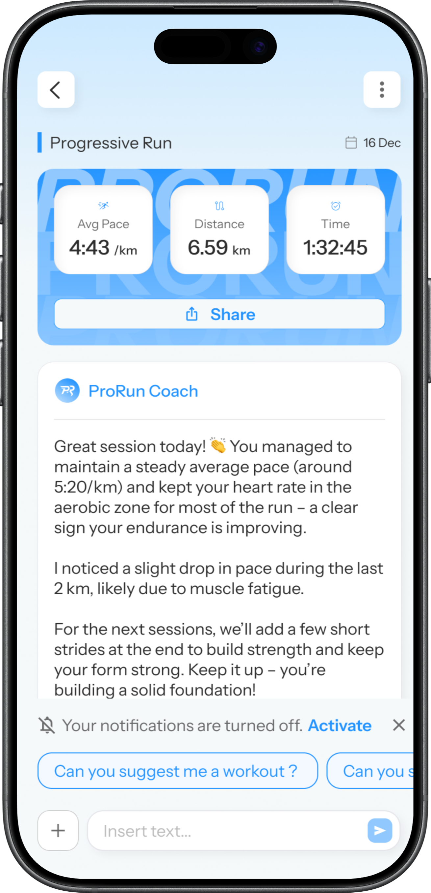
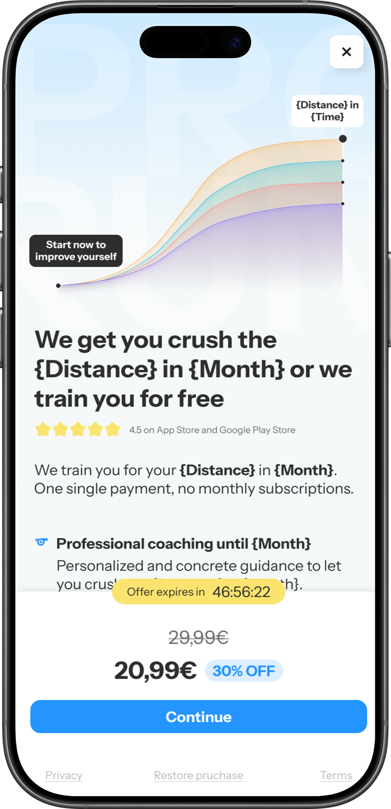

ProRun
Designing an AI-powered running experience that transforms personalised training into long-term engagement.
The challenge
ProRun combines AI coaching, wearable technology and structured training plans into a single running experience. The challenge was designing an intuitive product that could motivate users over time while balancing personalisation, usability and business goals.
- Create an engaging onboarding experience.
- Build trust around AI-powered coaching.
- Encourage long-term engagement without adding complexity.
Helping users get started
The onboarding experience was designed using progressive disclosure, introducing features step by step while communicating the value of the AI coach and the connected running card without overwhelming new users.


Supporting long-term engagement
Training plans and daily activities were designed to make progress easy to understand, helping users stay motivated through structured information, achievable goals and a consistent experience.


Designing AI interactions
The conversational experience was designed to make AI coaching feel supportive rather than intrusive, providing contextual guidance through natural interactions and personalised feedback.


Encouraging premium conversion
The premium experience focused on communicating long-term value rather than interrupting the user journey, balancing business objectives with a seamless product experience.

Collaboration & Accessibility
Throughout the project I collaborated with stakeholders and developers to refine user flows, validate design decisions and support implementation. Accessibility principles were considered across typography, colour contrast and interaction hierarchy to improve the overall user experience.
Impact
- Created a more intuitive onboarding experience through progressive disclosure.
- Improved user engagement with structured training plans and personalised AI guidance.
- Balanced user needs and business goals through thoughtful premium conversion flows.
This project strengthened my ability to design end-to-end product experiences by balancing usability, engagement and business objectives within a mobile AI-powered ecosystem.